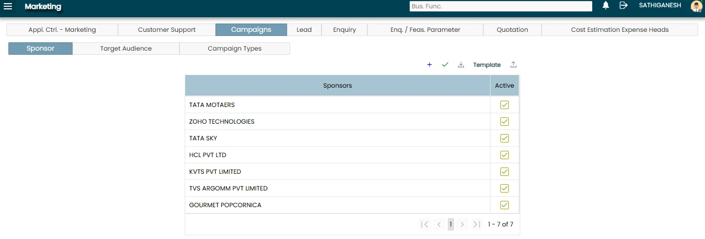

<div data-category="CRM" data-title="Sponsors" data-updated="December 01, 2025" data-contributors="RoadmapIT" data-breadcrumb="Home,CRM,Sponsors">
  <div class="page-content">
    <p>Sponsors typically refer to individual sponsor who is responsible to set out the vision and goals of the CRM project in line with the overall company plans and strategy.</p>
    <p>The details of the sponsors can be configured in the following screen.</p>
    <h5>Navigation path:</h5>
    <p class="fs-6">CRM \ Setup \ Setup-Marketing \ Campaign \ Sponsors</p>
    
    <ul style="list-style-type: none; align-content: center">
      <li class="mouse-icon">Click on <i class="bi bi-plus fs-4 mx-1 text-primary"></i> button to create new Sponsors</li>
      <li class="mouse-icon">Enter the Sponsor</li>
      <li class="mouse-icon">Select the Active flag if the Sponsor are to be used in transactions</li>
      <li class="mouse-icon">Click <i class="bi bi-check-lg fs-4 mx-1 text-success"></i> to save</li>
      <li class="mouse-icon">Using <i class="bi bi-download fs-5 mx-1 text-muted"></i> icon to export the master data to Excel</li>
      <li class="mouse-icon">Using Template button to download the template </li>
      <li class="mouse-icon">Using <i class="bi bi-upload fs-5 mx-1 text-muted"></i> icon to upload the master data</li>
    </ul>
  </div>
</div>
